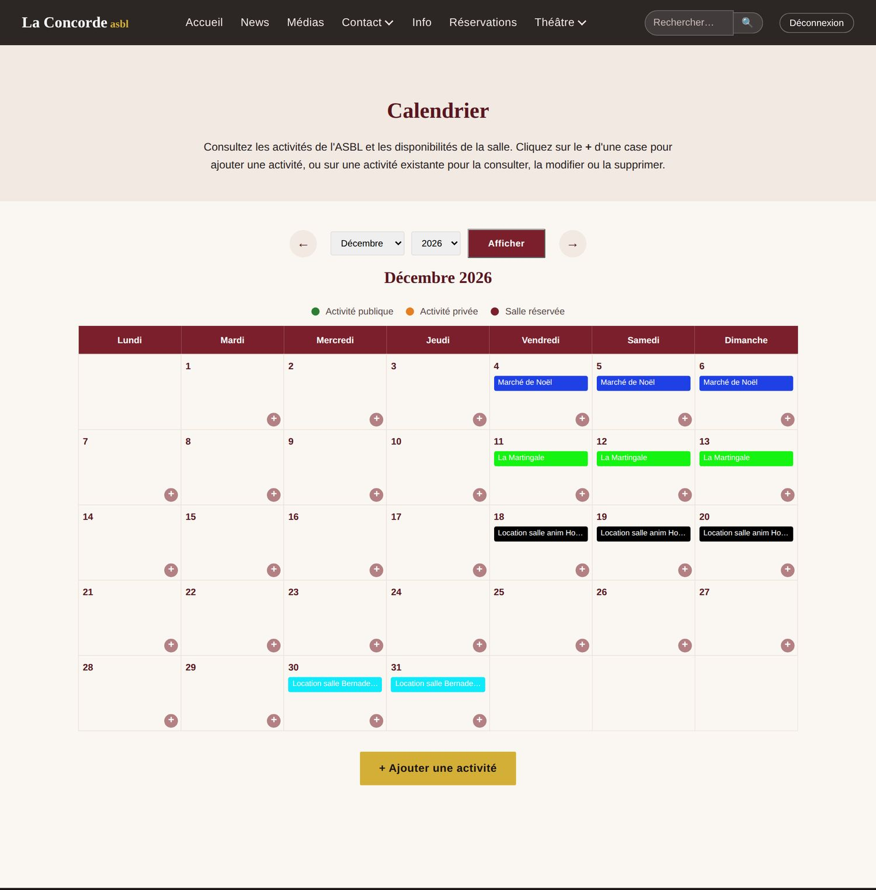

Votre compte de membre vous ouvre l'espace réservé de l'ASBL sur www.la-concorde.be.
Le site de La Concorde est à la fois la vitrine publique de l'ASBL (actualités, photos, agenda) et l'outil de travail de ses membres. Une fois connecté, vous pouvez :
Vous pouvez…
Où ?
Voir les activités privées de l'ASBL
Calendrier (menu Réservations → Calendrier), en orange
Ajouter vos activités au calendrier, et les modifier
Calendrier, bouton + d'un jour
Vous inscrire comme bénévole (bar, montage, ménage…)
Planning (menu Réservations → Planning)
Répondre aux invitations et aux sondages, discuter avec les autres membres
Planning
Organiser une réunion, une tâche ou une activité avec ses bénévoles
Planning, + Nouvel événement
Proposer une actualité (publiée après validation)
Page News
Demander la location de la salle pour vous-même
Formulaire de demande (chapitre 3)
La gestion des locations, des contrats, des albums photos, de la newsletter et du contenu du site est réservée aux responsables de l'ASBL. Si vous avez besoin d'un droit supplémentaire (par exemple l'accès à la billetterie du théâtre), demandez-le à un responsable.
Un espace privé
Le planning, ses discussions et les activités privées ne sont visibles que des membres connectés : rien n'apparaît sur le site public ni dans les moteurs de recherche.
Chapitre 2
Premiers pas
Créer votre compte, vous connecter et vous repérer.
Créer votre compte à partir de l'invitation
On ne crée pas soi-même un compte : un responsable vous envoie une invitation par e-mail, intitulée « Invitation : rejoignez l'espace des membres de La Concorde ».
Cliquez sur Créer mon compte dans l'e-mail.
Vérifiez votre prénom, votre nom et votre adresse e-mail.
Choisissez un mot de passe : 10 caractères au moins, pas uniquement des chiffres, ni trop courant, ni trop proche de votre nom. Tapez-le deux fois.
Cliquez sur Créer mon compte : vous êtes connecté et arrivez sur le planning.
L'écran ouvert par le lien de l'invitation.
Un lien personnel, valable 14 jours
Le lien ne sert qu'une fois et ne doit pas être transmis. S'il a expiré (« Invitation non valable »), demandez à la personne qui vous a invité de vous l'envoyer à nouveau : seul le dernier e-mail reçu fonctionne.
Se connecter
Cliquez sur Connexion en haut à droite de n'importe quelle page.
Saisissez votre adresse e-mail (ou votre identifiant, du type prenom.nom) et votre mot de passe, puis cliquez sur Se connecter.
Le bouton devient Déconnexion : utilisez-le sur un ordinateur partagé (salle, bar…).
La page de connexion.
Trop d'essais ?
Après 5 mots de passe erronés, les connexions sont bloquées 15 minutes depuis votre connexion Internet. Patientez, puis réessayez. Mot de passe oublié : demandez à un responsable de vous en définir un nouveau.
Le menu
Une fois connecté, le menu Réservations s'ouvre sur deux entrées : Calendrier (l'agenda commun de l'ASBL) et Planning (l'espace des membres). Une pastille dorée indique le nombre de notifications non lues du planning.
Le menu Réservations une fois connecté.
Si vous avez l'accès à la billetterie, une entrée Théâtre apparaît aussi.
Sur téléphone
Le site s'utilise aussi bien sur téléphone : le menu se replie derrière le bouton ☰ en haut à droite, et toutes les pages s'adaptent à l'écran.
Le menu ouvert sur téléphone.Le calendrier sur téléphone.
Chapitre 3
Le calendrier
L'agenda commun de l'ASBL : menu Réservations → Calendrier.
Lire le calendrier
Le calendrier affiche un mois à la fois ; on change de mois avec les flèches ← → ou les listes mois / année. Les couleurs indiquent :
Vert : activité publique (visible de tous)
Orange : activité privée (visible des seuls membres connectés)
Bordeaux : salle louée

Le calendrier vu par un membre connecté : les activités privées apparaissent en orange.
Ajouter une activité
Cliquez sur le + du jour voulu (ou sur + Ajouter une activité sous le calendrier).
Indiquez le nom, une description si besoin, la date de début et la date de fin (identiques pour un seul jour).
Choisissez la visibilité : publique (tout le monde la voit, elle apparaît aussi sur l'accueil du site) ou privée (membres connectés uniquement).
Cliquez sur Ajouter l'activité.
Le formulaire « Ajouter une activité ».
Exemple : la répétition générale du Blé qui Lève
Clic sur le + du jeudi 19 novembre.
Nom : « Répétition générale BQL » ; début et fin : 19/11/2026.
Visibilité : Privée — seuls les membres la verront.
Modifier ou supprimer votre activité
Cliquez sur l'activité pour ouvrir sa fiche : vous y trouvez Modifier et Supprimer pour les activités que vous avez créées. Pour celles des autres, adressez-vous à leur auteur ou à un responsable.
La fiche d'une activité privée.
Demander la location de la salle
Pour louer la salle à titre personnel (anniversaire, fête de famille…), utilisez le formulaire de demande, comme tout locataire : /calendrier/reservation/demander/. Votre demande est examinée par l'équipe, qui vous envoie le contrat de location. La réservation est confirmée à la réception du paiement de la location.
Le formulaire de demande de location.
Chapitre 4
Le planning des membres
Réunions, tâches et activités de l'ASBL, et l'inscription des bénévoles : menu Réservations → Planning.
Les rubriques
Les onglets en haut de chaque page du planning : Agenda, Plannings (tous les tableaux de bénévoles en cours), À combler (ce qui manque de bénévoles), Invitations, Sondages, Discussions, Mes disponibilités et Notifications. Trois types d'événements s'y côtoient :
Type
Par exemple
Réunion
Comité, assemblée, préparation d'un événement.
Tâche de l'ASBL
Ménage, courses, entretien, souvent chaque semaine.
Activité / événement spécial
Souper, marché de Noël, ducasse, avec ses bénévoles.
L'agenda
Choisissez la vue Mois, Semaine, Jour ou Liste ; les flèches changent de période, « Aujourd'hui » y revient.
Les boutons Réunion, Tâche, Activité filtrent par type.
Le drapeau ⚑ 2 signale un événement où il manque encore 2 bénévoles.
Dans la vue Liste, Mes engagements ne garde que ce qui vous concerne : vos inscriptions, vos invitations, vos événements.
La vue mensuelle du planning. Les activités du calendrier apparaissent en gris italique, pour mémoire.
S'inscrire comme bénévole : le tableau des tâches
Pour trouver vite un planning, ouvrez l'onglet Plannings : il liste toutes les activités à venir qui cherchent des bénévoles, avec leurs tâches et les places à combler ; Ouvrir le planning mène directement au tableau.
L'onglet Plannings.
La page d'une activité présente un tableau : une colonne par tâche (montage, bar, service…), une ligne par horaire. Chaque case montre les inscrits et le nombre de places (ex. 1/2).
Le tableau des tâches de la ducasse.
Cliquez sur + Moi dans la case qui vous convient : vous êtes inscrit, la case de votre inscription est encadrée en doré.
Me retirer libère votre place ; l'organisateur est prévenu.
Couleurs : vert = complet, orange = il manque du monde, rouge = personne, hachuré = la tâche n'a pas lieu à cette heure.
Le bouton Liste, au-dessus du tableau, présente les mêmes cases en liste.
Sur téléphone, faites glisser le tableau vers la gauche.
En bas de la page : la discussion
Chaque événement a son fil de discussion : posez-y vos questions (« Qui apporte les rallonges ? »). Les inscrits et les invités sont prévenus des nouveaux messages.
« À combler » : donner un coup de main
L'onglet À combler rassemble tous les créneaux où il manque du monde, sur 7, 30 ou 90 jours. Un clic sur Je prends vous inscrit. Un créneau marqué Urgent commence dans moins de 3 jours : tous les membres en sont prévenus.
Les créneaux à combler.
Mes disponibilités
Indiquez les jours où vous pouvez aider (toute la journée ou entre deux heures, avec une remarque) : les responsables les consultent pour savoir qui contacter quand il manque du monde. Retirez une disponibilité qui ne tient plus avec le bouton Retirer.
Les invitations
Quand on vous invite à une réunion ou à un événement, vous recevez une notification. Sur la page de l'événement ou dans l'onglet Invitations, répondez J'accepte ou Je ne peux pas, avec un commentaire si vous le souhaitez. Vous pouvez changer d'avis : la dernière réponse compte. Certaines réunions (comité…) ne sont visibles que de leurs invités.
Chapitre 5
Sondages, discussions et notifications
Décider ensemble, échanger, et être prévenu de ce qui vous concerne.
Répondre à un sondage
Trouver une date : pour chaque date proposée, répondez Oui, Si nécessaire ou Non, puis Envoyer ma réponse. La meilleure date est surlignée en vert.
Prendre une décision : cochez votre choix (un seul, ou plusieurs si le sondage le permet) et cliquez sur Voter. Les résultats s'affichent aussitôt.
Votre réponse reste modifiable tant que le sondage n'est pas clôturé.
Un sondage de date : votre ligne, en jaune, est modifiable.
Vous pouvez aussi créer un sondage (onglet Sondages, + Nouveau sondage) : la question, les dates ou réponses proposées, et les personnes consultées (tous les membres si vous ne cochez personne).
Les discussions
Les canaux (« Général »…) sont ouverts à tous les membres ; chaque événement a en plus son propre fil, en bas de sa page.
Tapez @ puis le début d'un prénom : le site propose les membres ; la personne mentionnée est prévenue.
Entrée envoie le message, Maj + Entrée va à la ligne. Les nouveaux messages s'affichent seuls, en quelques secondes.
Le canal « Général », avec une mention.
Les notifications
Le planning vous prévient : invitation, nouveau sondage, événement créé, modifié ou annulé, message qui vous concerne ou vous mentionne, créneau urgent. Le nombre de notifications non lues s'affiche dans le menu et dans l'onglet Notifications ; un clic ouvre la page concernée, Tout marquer comme lu remet le compteur à zéro.
Elles arrivent aussi par e-mail, regroupées (au plus un e-mail toutes les 5 minutes). Dans l'onglet Notifications, cochez ce que vous voulez recevoir par e-mail ; pour les discussions, choisissez entre tous les messages qui vous concernent, seulement les mentions (@), ou aucun.
Les notifications et le choix des e-mails.
Chapitre 6
Organiser un événement
Tout membre peut créer une réunion, une tâche ou une activité, et en organiser les bénévoles.
Créer l'événement
Dans le planning, + Nouvel événement (ou le + d'un jour).
Choisissez le type, le titre, le début et la fin, le lieu et une description.
Répétition (facultatif) : chaque semaine, toutes les deux semaines ou chaque mois, jusqu'à une date.
Invitations : cochez des groupes ou des membres ; ils reçoivent une notification et répondent. « Réservé aux invités » cache l'événement aux autres membres.
Cliquez sur Ajouter au planning. Tous les membres concernés sont prévenus.
Le formulaire d'un nouvel événement.
Le tableau des tâches de votre activité
Après la création d'une activité, le site vous propose aussitôt d'ajouter ses tâches (bouton + Ajouter une tâche par la suite) :
Le nom de la tâche (ex. « Bar ») et le nombre de bénévoles par case.
Une ou plusieurs plages horaires : le jour est déjà rempli, indiquez les heures (ex. 18:00–20:00 puis 20:00–22:00). Une fin plus petite que le début passe minuit (22:00–02:00).
Facultatif : découper chaque plage en tours de N minutes (ex. 120 pour des tours de 2 heures).
Enregistrer et ajouter une autre tâche pour continuer, ou Enregistrer.
Une tâche et ses plages horaires.
Dans votre tableau, sous chaque tâche : Modifier (renommer, changer le nombre de bénévoles, ajouter des plages) ou Supprimer.
Dans une case : la liste Inscrire… y ajoute un membre (par exemple quelqu'un qui vous l'a demandé de vive voix), le × en retire un. La personne est prévenue.
Pour quelqu'un qui n'a pas de compte (voisin, ami, bénévole d'un jour) : tapez son nom dans le champ Autre nom… de la case, puis +. Le nom apparaît en italique et occupe une place ; le × le retire.
Sur la page de l'événement : Modifier, Annuler l'événement (il reste visible, barré, et peut être rétabli) ou Supprimer.
Exemple : le ménage du lundi
Type « Tâche de l'ASBL », titre « Ménage de la salle », lundi 9 h – 11 h, chaque semaine jusqu'au 21 décembre.
Dans « Créneaux », 120 minutes et 2 bénévoles : chaque lundi apparaît dans l'agenda avec 2 places à prendre.
Vous ne pouvez modifier que les événements que vous avez créés ; les responsables de l'ASBL peuvent intervenir sur tous.
Chapitre 7
Proposer une actualité
Partager un événement, une affiche ou un compte rendu sur la page News du site.
Rédiger l'actualité
Connecté, ouvrez la page News et cliquez sur + Proposer une actualité.
Remplissez le titre, la date (aujourd'hui par défaut), l'auteur et un résumé court : c'est lui qui apparaît dans la liste, sur l'accueil et dans les partages.
Ajoutez une image mise en avant (affiche, photo au format paysage).
Composez l'article avec l'éditeur par blocs (ci-dessous), ajoutez si vous le souhaitez des mots-clés et un lien.
Cliquez sur Envoyer pour validation.
Le bouton « Proposer une actualité ».Le formulaire d'une actualité.
L'éditeur par blocs
L'article est une suite de blocs : les boutons Ajouter en ajoutent un à la fin, les flèches ↑ ↓ le déplacent, la croix ✕ le retire.
Bloc
Contenu
Texte
Paragraphes, avec gras, italique, listes et liens (sélectionnez le texte, puis Lien).
Intertitre
Un titre de section dans l'article.
Image
Choisir une photo (20 Mo au maximum), sa position et une légende.
Citation
Une phrase mise en valeur, avec son auteur.
Encart
Un cadre coloré : horaires, tarifs, informations pratiques.
Lien utile
Un lien présenté comme un bouton (adresse commençant par https://).
L'éditeur par blocs : texte, image placée à gauche avec sa légende, texte, citation.
Une image placée à gauche ou à droite est entourée par le bloc de texte qui la suit : placez donc le bloc Image juste avant ce texte. Sur téléphone, les images s'affichent en pleine largeur.
Le résultat sur le site : le texte entoure l'image placée à gauche.
Validation, modification, suppression
Votre actualité est relue par un responsable avant d'être publiée. En attendant, elle apparaît dans « vos actualités en attente » sur la page News.
Vous pouvez modifier vos actualités (lien Modifier) : une modification d'un article publié repasse par la validation, la version en ligne restant visible d'ici là.
Vous pouvez supprimer vos propres actualités.
Conseils de rédaction
Un titre court et précis (« Marché de Noël 2026 » plutôt que « Info »).
Un résumé d'une ou deux phrases.
Des photos légères (quelques Mo) : elles s'envoient plus vite depuis un téléphone.
Quelques mots-clés récurrents (#théâtre, #carnaval…).
Chapitre 8
Questions fréquentes
Les réponses aux questions les plus courantes, et les adresses utiles.
« Le lien de mon invitation ne fonctionne plus. »
Il a expiré (14 jours), a déjà servi à créer votre compte, ou a été remplacé par une invitation renvoyée (seul le dernier e-mail compte). Si votre compte existe, connectez-vous avec votre adresse e-mail ; sinon, demandez une nouvelle invitation.
« J'ai oublié mon mot de passe. »
Demandez à un responsable de l'ASBL : il vous en définit un nouveau. Gardez-le pour vous.
« La page affiche “Connexion bloquée”. »
Après 5 mots de passe erronés, les connexions sont bloquées 15 minutes depuis votre connexion Internet (et pour ceux qui la partagent, par exemple la wifi de la salle). Patientez, puis réessayez.
« Je ne vois pas le Planning. »
Connectez-vous, puis ouvrez le menu Réservations → Planning. Un événement « réservé aux invités » n'apparaît que si vous y êtes invité.
« Je ne reçois pas les e-mails du planning. »
Regardez dans les indésirables, et vérifiez vos choix dans l'onglet Notifications. Les e-mails partent groupés, avec quelques minutes de décalage. Si vous ne recevez toujours rien, prévenez un responsable : votre compte n'a peut-être pas la bonne adresse.
« Le bouton + Moi n'apparaît pas dans une case. »
La case est complète (vert), l'événement est passé ou annulé. Proposez votre aide dans la discussion de l'événement : l'organisateur peut ajouter une place.
« Mon actualité n'apparaît pas sur le site. »
Elle attend la validation d'un responsable (voir « vos actualités en attente » sur la page News). Une fois publiée, l'accueil ne montre que l'actualité la plus récente ou celle mise « à la une ».
« Je ne peux pas modifier une activité ou un événement. »
Seul son auteur (et les responsables) peut le modifier : adressez-vous à lui, par exemple dans la discussion de l'événement.
Bons réflexes
Déconnectez-vous sur les ordinateurs partagés (salle, bar).
Votre compte est personnel : ne le prêtez pas, chaque membre a le sien.
Inscrit sur un créneau et finalement empêché ? Retirez-vous le plus tôt possible : la place réapparaît dans « À combler ».
Pensez à mettre à jour Mes disponibilités : c'est la première chose que les responsables consultent quand il manque du monde.
Aide-mémoire des adresses
Adresse
Page
/connexion/ · /deconnexion/
Se connecter / se déconnecter
/calendrier/
Calendrier des activités
/calendrier/reservation/demander/
Demander la location de la salle
/planning/
Planning des membres
/planning/a-combler/
Créneaux à combler
/planning/notifications/
Vos notifications et vos choix d'e-mails
/ajouter-actualite/
Proposer une actualité
À propos de ce manuel
Les captures d'écran ont été réalisées avec des données d'exemple (noms et événements fictifs). L'apparence peut légèrement varier selon votre navigateur et la taille de votre écran. Le manuel complet, destiné aux responsables, décrit en plus la gestion des locations, du théâtre, de la newsletter et du contenu du site.